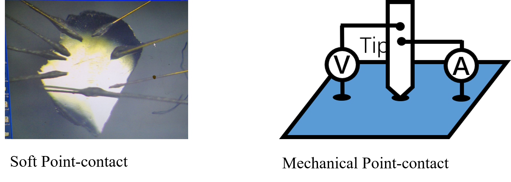
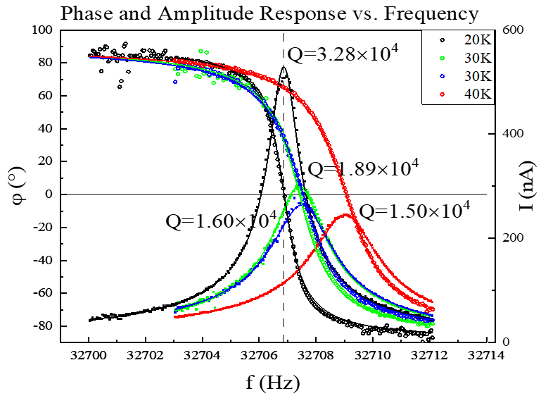
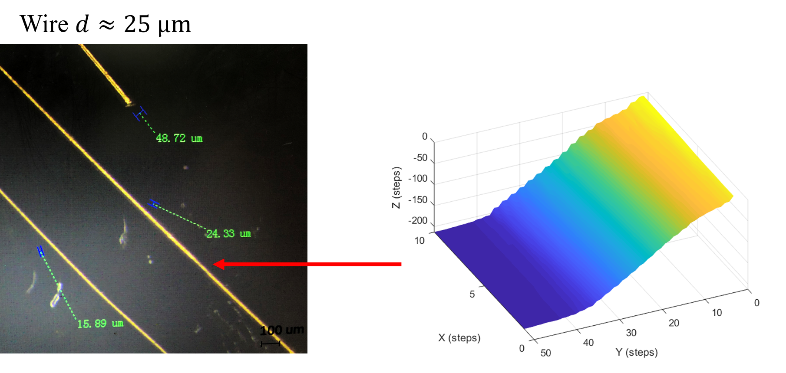

Introduction
Point-contact methods
- Soft Point-contact
- Mechanical Point-contact

Difficult to operate when faced with samples shown in (c)
Methods
Device & Apparatus Design
Detection of Resonance Frequency
The electric properties of a tuning fork can be well described using simple RLC model.1

\[ \begin{gathered} \omega_{r}=2 \pi f_{r}=\frac{1}{\sqrt{L C}} \\ Y(\omega)=\frac{I(\omega)}{U(\pi)}=i \omega C_{S}+\frac{1}{R+\frac{1}{i \omega C}+i \omega L} \\ Y(f)=\frac{I(\omega)}{U(\pi)}=i 2 \pi f C_{S}+\frac{A_{0} \Delta f\left(\Delta f-2 i\left(f-f_{r}\right)\right)}{\Delta f^{2}+4\left(f-f_{r}\right)^{2}} \end{gathered} \]
Using these formula to fit the measurement curve, we can recover the quality factor of the tuning fork.

Engaging Detection

Controlling Strategy
Improvement
- Eliminate retracting
- Change routing scheme to zig-zag

Avoid discontinuities in \(x, y\) direction.
Modular Design & Developping

Results
We can recover the shape of a wire using the prototype scanning probe, indicating that the prototype has reached Micron-level resolution.
- 1.Kamra et al., “An All-Electrical Torque Differential Magnetometer Operating under Ambient Conditions.” ↩︎